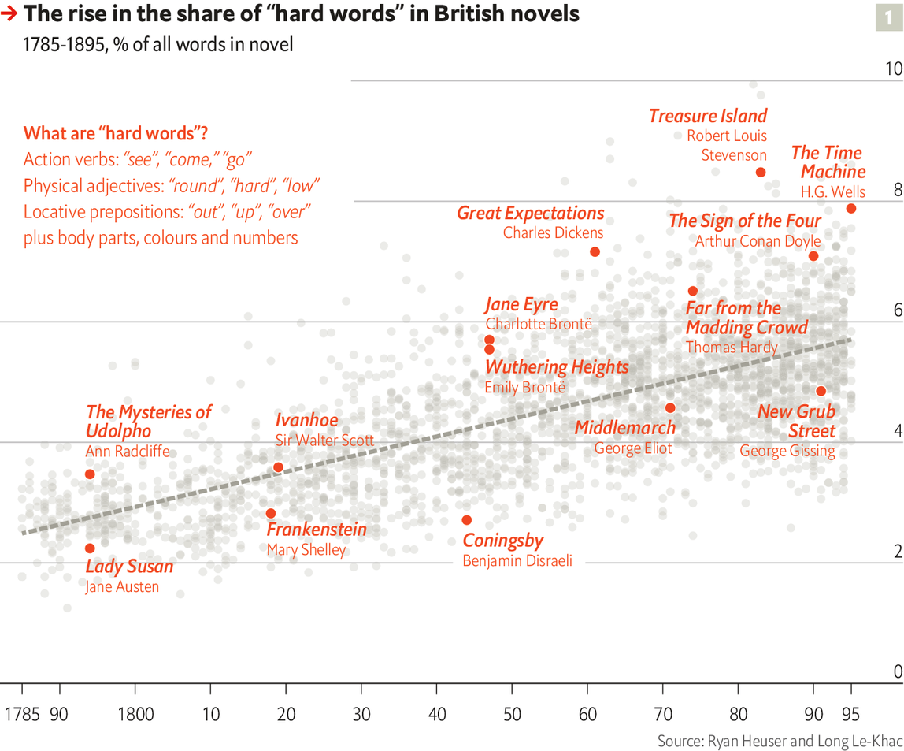

2021-01-04T03:48:19+00:00
Digital humanities
数字人文
數字人文
The book of numbers
数字之书
數字之書
How data analysis can enrich the liberal arts
数据分析如何能丰富人文学科
數據分析如何能豐富人文學科

IT ALL STARTED with a preposition. In 1941 Father Roberto Busa, a Roman Catholic priest, started noting down as many uses of the word “in” as he could find in the Latin work of Thomas Aquinas, a medieval theologian and saint. Eight years and 10,000 handwritten cards later he completed his linguistic analysis of Aquinas’s “interiority”—his introspective faith—at Rome’s Pontifical Gregorian University. By then he had a suspicion that his work could be done far more efficiently. He started hunting for “some type of machinery” to speed up his new project, recording the context of all 10m words written by Aquinas.
这一切始于一个介词。1941年，罗马天主教神父罗伯托·布萨（Roberto Busa）开始记录他在中世纪神学家圣托马斯·阿奎那（Thomas Aquinas）的拉丁文著作中能找到的“in”的用法。八年后，他积累了一万张手写索引卡片，之后在罗马的宗座格列高利大学（Pontifical Gregorian University）完成了对阿奎那的“内在性”（他的内省信仰）的语言分析。那时他感觉自己的工作应该可以用高效得多的方式来完成。他开始寻找“某种机器”来加速他的新项目——记录阿奎纳著述全文上千万个单词的上下文。
這一切始於一個介詞。1941年，羅馬天主教神父羅伯托·布薩（Roberto Busa）開始記錄他在中世紀神學家聖托馬斯·阿奎那（Thomas Aquinas）的拉丁文著作中能找到的“in”的用法。八年後，他積累了一萬張手寫索引卡片，之後在羅馬的宗座格列高利大學（Pontifical Gregorian University）完成了對阿奎那的“內在性”（他的內省信仰）的語言分析。那時他感覺自己的工作應該可以用高效得多的方式來完成。他開始尋找“某種機器”來加速他的新項目——記錄阿奎納著述全文上千萬個單詞的上下文。
Father Busa’s zeal took him to the office of Thomas Watson, IBM’s chairman. Soon he had switched from handwritten cards to IBM’s punch-card machines, before adopting magnetic tape in the 1950s. In the 1960s dozens of full-time typists were involved. By 1980, when his team finally printed the “Index Thomisticus” in 56 volumes, they had spooled through 1,500km (930 miles) of tape. A CD-ROM containing 1.4GB of data came out in 1992, with a website following in 2005. The 97-year-old priest died in 2011. But not before he had initiated a new quest, to annotate the syntax of every sentence in the Index Thomisticus database.
布萨神父对这项事业的热情驱使他走进了IBM董事长托马斯·沃森（Thomas Watson）的办公室。很快他就不再手写索引卡，而开始使用IBM的穿孔卡片机，到50年代又用上了磁带。60年代，数十名全职打字员参与进来。1980年，他的团队最终出版了56卷的《托马斯著作索引》（Index Thomisticus），此时他们已经用了长达1500公里的磁带。1992年团队发行了包含1.4GB数据的CD光盘，接着在2005年推出了网站。这位神父于2011年去世，享年97岁。但离世前他已经启动了一项新项目——对《托马斯著作索引》数据库中的每个句子做句法标注。
布薩神父對這項事業的熱情驅使他走進了IBM董事長托馬斯·沃森（Thomas Watson）的辦公室。很快他就不再手寫索引卡，而開始使用IBM的穿孔卡片機，到50年代又用上了磁帶。60年代，數十名全職打字員參與進來。1980年，他的團隊最終出版了56卷的《托馬斯著作索引》（Index Thomisticus），此時他們已經用了長達1500公里的磁帶。1992年團隊發行了包含1.4GB數據的CD光盤，接着在2005年推出了網站。這位神父於2011年去世，享年97歲。但離世前他已經啟動了一項新項目——對《托馬斯著作索引》數據庫中的每個句子做句法標註。
Such is the creation story of the digital humanities, a broad academic field including all sorts of crossovers between computing and the arts. The advances since its punch-card genesis have been “enormously greater and better than I could then imagine,” remarked Father Busa in his old age. “Digitus Dei est hic! [The finger of God is here!]” Almost every humanistic composition imaginable has been rendered in bytes. Aquinas’s works are a speck in the corpus of Google Books, which contains at least 25m volumes and perhaps two trillion words. Naxos, a music service, has annotated 2.4m classical pieces with authorial biographies and instrumentation. Spotify, a streaming service, has 60m tunes, each with metadata about tempo, time signatures and timbre.
这就是数字人文学的创世故事。这一学科内容广泛，包括计算与人文艺术间的各种交叉。自穿孔卡片机开启这一学科以来，所取得的进步“比我那时能想象得到的要大太多，好太多”，布萨神父在晚年时说。“Digitus Dei est hic！[上帝的手指在此显圣！]”几乎所有能想到的人文著作都已有数字版。阿奎那的作品在谷歌图书（Google Books）中只是沧海一粟，该书库至少有2500万册藏书，总字数可能达两万亿。拿索斯唱片公司（Naxos）已为240万首古典作品标注了作者传记和器乐谱。流媒体服务Spotify有6000万首曲目，每首都有关于节奏、拍号和音品的元数据。
這就是數字人文學的創世故事。這一學科內容廣泛，包括計算與人文藝術間的各種交叉。自穿孔卡片機開啟這一學科以來，所取得的進步“比我那時能想象得到的要大太多，好太多”，布薩神父在晚年時說。“Digitus Dei est hic！[上帝的手指在此顯聖！]”幾乎所有能想到的人文著作都已有數字版。阿奎那的作品在谷歌圖書（Google Books）中只是滄海一粟，該書庫至少有2500萬冊藏書，總字數可能達兩萬億。拿索斯唱片公司（Naxos）已為240萬首古典作品標註了作者傳記和器樂譜。流媒體服務Spotify有6000萬首曲目，每首都有關於節奏、拍號和音品的元數據。
What started as a niche pursuit is growing rapidly. Google Scholar now contains about 75,000 academic articles and essays that mention “digital humanities”. That total is already bigger than for “Napoleon Bonaparte” (57,000) or “Romeo and Juliet” (66,000). Nearly half of the 75,000 articles were published since 2016.
数字人文一开始只是一个小众研究领域，但正在迅速发展。谷歌学术（Google Scholar）现在约有7.5万篇提到“数字人文”的文章和论文。这已经超过了提到“拿破仑·波拿巴”或“罗密欧与朱丽叶”的文章数（分别为5.7万和6.6万篇）。这7.5万篇文章中近一半发表于2016年之后。
數字人文一開始只是一個小眾研究領域，但正在迅速發展。谷歌學術（Google Scholar）現在約有7.5萬篇提到“數字人文”的文章和論文。這已經超過了提到“拿破崙·波拿巴”或“羅密歐與朱麗葉”的文章數（分別為5.7萬和6.6萬篇）。這7.5萬篇文章中近一半發表於2016年之後。
Time and the machine
时间与机器
時間與機器
Digitisation’s clearest benefits are speed and scale. Because of decades of exponential growth in computing sophistication, projects that once lasted a lifetime—literally, for Father Busa—now require a fraction of it. Take the work of Barbara McGillivray at the Alan Turing Institute, Britain’s national centre for data science. Having done her PhD in computational linguistics on the “Index Thomisticus”, she wanted to create a similar resource for ancient Greek. After starting as the institute’s first humanist in 2017, she and a colleague needed just three months to convert 12 centuries of classics into an annotated corpus of 10m words. The final product compresses Homer, Socrates and Plato into 2.5GB of tidy Extensible Markup Language (XML), complete with the grammatical properties of each word.
数字化最明显的好处是速度和规模。几十年来计算技术呈指数级增长，曾经要倾尽一生才能完成的研究（对布萨神父来说毫不夸张）现在只需要不太长的时日。以英国数据科学研究的中心艾伦·图灵研究所（Alan Turing Institute）的芭芭拉·麦克吉利弗雷（Barbara McGillivray）的研究为例。她在以《托马斯著作索引》的计算语言学研究为课题获得博士学位后，想为古希腊语创建类似的索引。自2017年成为艾伦·图灵研究所的第一位人文学者后，她和一位同事仅用了三个月就将跨12个世纪的古希腊语经典作品转换成了含1000万个单词的带标注语料库。最终成果将荷马、苏格拉底和柏拉图的作品以整齐的可扩展标记语言（XML）格式压缩到仅2.5GB大小，并包含每个单词的语法特性。
數字化最明顯的好處是速度和規模。幾十年來計算技術呈指數級增長，曾經要傾盡一生才能完成的研究（對布薩神父來說毫不誇張）現在只需要不太長的時日。以英國數據科學研究的中心艾倫·圖靈研究所（Alan Turing Institute）的芭芭拉·麥克吉利弗雷（Barbara McGillivray）的研究為例。她在以《托馬斯著作索引》的計算語言學研究為課題獲得博士學位後，想為古希臘語創建類似的索引。自2017年成為艾倫·圖靈研究所的第一位人文學者後，她和一位同事僅用了三個月就將跨12個世紀的古希臘語經典作品轉換成了含1000萬個單詞的帶標註語料庫。最終成果將荷馬、蘇格拉底和柏拉圖的作品以整齊的可擴展標記語言（XML）格式壓縮到僅2.5GB大小，並包含每個單詞的語法特性。
Curating such enormous archives is just the starting-point. The trick is to turn the data into interesting findings. Researchers have been trying to do that from almost the time when Father Busa began punching cards. From the late 1950s Frederick Mosteller and David Wallace, two statisticians, spent several years using a desk-sized IBM 7090 to calculate the frequency of words in the Federalist papers, written by Alexander Hamilton, James Madison and John Jay. They inferred that 12 anonymous essays were probably written by Madison, based on certain tics. He rarely used “upon”, for example, whereas Hamilton often did.
整理如此庞大的数字档案只是个开端。难点是将数据变成有趣的研究发现。从布萨神父开始使用穿孔卡片机起，研究人员差不多就在尝试做这件事了。自上世纪50年代后期开始，弗雷德里克·莫斯特勒（Frederick Mosteller）和大卫·华莱士（David Wallace）这两位统计学家花了几年时间，用一台桌子大小的IBM 7090计算亚历山大·汉密尔顿（Alexander Hamilton）、詹姆斯·麦迪逊（James Madison）和约翰·杰伊 （John Jay）撰写的联邦党人文集中单词出现的频率。基于一些下意识的用词喜好，他们推断在这些匿名发表的文章中有12篇很可能出自麦迪逊之手。例如，他很少用“基于”（upon）这个词，而汉密尔顿经常用。
整理如此龐大的數字檔案只是個開端。難點是將數據變成有趣的研究發現。從布薩神父開始使用穿孔卡片機起，研究人員差不多就在嘗試做這件事了。自上世紀50年代後期開始，弗雷德里克·莫斯特勒（Frederick Mosteller）和大衛·華萊士（David Wallace）這兩位統計學家花了幾年時間，用一台桌子大小的IBM 7090計算亞歷山大·漢密爾頓（Alexander Hamilton）、詹姆斯·麥迪遜（James Madison）和約翰·傑伊 （John Jay）撰寫的聯邦黨人文集中單詞出現的頻率。基於一些下意識的用詞喜好，他們推斷在這些匿名發表的文章中有12篇很可能出自麥迪遜之手。例如，他很少用“基於”（upon）這個詞，而漢密爾頓經常用。
Advances in machine learning have given Ms McGillivray a far shinier array of tools. Along with four co-authors, she tested whether an algorithm could track the meaning of Greek words over time. They manually translated 1,400 instances of the noun kosmos, which initially tended to denote “order”, then later shifted to “world” (a celestial meaning that survives in the English “cosmos”). Encouragingly, the machine agreed. A statistical model reckoned that in 700BC kosmos was frequently surrounded by “man”, “call” and “marketplace”, a cluster suggesting “order”. By 100AD a second cluster emerged, suggesting “world”: “god”, “appear” and “space”.
机器学习的进步让麦克吉利弗雷有了一系列更高级的工具可用。她与四位合著者测试一种算法能否追踪希腊语词汇长期以来的含义演变。他们人工翻译了1400个含有名词kosmos的例子，这个词最初多用来表示“秩序”，后来演变成“世界”之意（英语的“cosmos”一词延续了这个指称宇宙的意思）。令人鼓舞的是，机器同意他们的释义。一个统计模型推断，在公元前700年，“kosmos”经常和“人”（man）、“呼喊”（call）及“市场”（marketplace）一起出现，这些词簇表明它本身有“秩序”的意思。到了公元100年，“kosmos”开始出现在包含“神”（god）、“出现”（appear）和“空间”（space）等词的第二组词簇中，表明它有“世界”之意。
機器學習的進步讓麥克吉利弗雷有了一系列更高級的工具可用。她與四位合著者測試一種算法能否追蹤希臘語詞彙長期以來的含義演變。他們人工翻譯了1400個含有名詞kosmos的例子，這個詞最初多用來表示“秩序”，後來演變成“世界”之意（英語的“cosmos”一詞延續了這個指稱宇宙的意思）。令人鼓舞的是，機器同意他們的釋義。一個統計模型推斷，在公元前700年，“kosmos”經常和“人”（man）、“呼喊”（call）及“市場”（marketplace）一起出現，這些詞簇表明它本身有“秩序”的意思。到了公元100年，“kosmos”開始出現在包含“神”（god）、“出現”（appear）和“空間”（space）等詞的第二組詞簇中，表明它有“世界”之意。
The thrill of getting “a computer to blindly agree with us”, explains Ms McGillivray, is that she could now apply it easily to the 64,000 other distinct words in the corpus. She has already spotted that paradeisos, a Persian loan-word for “garden”, took on its theological context of “woman”, “god” and “eat” around 300BC, when the Old Testament was first translated into Greek. At a few keystrokes, the algorithm tapped into one of history’s great intellectual exchanges, between Judaistic theology and Greek literature.
“一台计算机独立计算的结果与我们的认识不谋而合”之所以令人激动，麦克吉利弗雷解释说，是因为她现在可以轻松地将机器学习应用于语料库中其他6.4万个不同语义的单词。她已经发现，在公元前300年左右《旧约》最早被译成希腊语时，希腊语中借自波斯语的“花园”（paradeisos）一词开始带有神学意义，常与“女人”（women）、“神”（god）和“吃”（eat）这些词一起出现。只消敲几下键盘，算法就挖掘出犹太教神学和希腊文学之间历史上一次重要的思想交流。
“一台計算機獨立計算的結果與我們的認識不謀而合”之所以令人激動，麥克吉利弗雷解釋說，是因為她現在可以輕鬆地將機器學習應用於語料庫中其他6.4萬個不同語義的單詞。她已經發現，在公元前300年左右《舊約》最早被譯成希臘語時，希臘語中借自波斯語的“花園”（paradeisos）一詞開始帶有神學意義，常與“女人”（women）、“神”（god）和“吃”（eat）這些詞一起出現。只消敲幾下鍵盤，算法就挖掘出猶太教神學和希臘文學之間歷史上一次重要的思想交流。
Take a byte
尝一口字节吧
嘗一口字節吧
The most compelling number-crunching of this sort has focused on English writing from 1750-1900, thanks to that era’s rapid expansion of printed texts. Such Victorian data-mining has mostly taken place in America. The Stanford Literary Lab was established in 2010. In contrast to “close reading”, by which humans spot nuances on a couple of pages, the lab’s 60-odd contributors have pioneered “distant reading”, by getting computers to detect undercurrents in oceans of text.
最引人入胜的数字分析主要集中在1750年至1900年的英语作品上，这得益于那个时代印刷文本的迅速发展。对维多利亚时代作品的数据挖掘主要在美国开展。斯坦福文学实验室（Stanford Literary Lab）于2010年成立。实验室的60多位撰稿人开创了“远读”（distant reading）的先河，也就是让计算机在文本的海洋中探查暗流，这是与人类在有限的篇章中发现细微之处的“近读”或“精读”（close reading）相对的概念。
最引人入勝的數字分析主要集中在1750年至1900年的英語作品上，這得益於那個時代印刷文本的迅速發展。對維多利亞時代作品的數據挖掘主要在美國開展。斯坦福文學實驗室（Stanford Literary Lab）於2010年成立。實驗室的60多位撰稿人開創了“遠讀”（distant reading）的先河，也就是讓計算機在文本的海洋中探查暗流，這是與人類在有限的篇章中發現細微之處的“近讀”或“精讀”（close reading）相對的概念。
An early project dredged through nearly 3,000 British novels from 1785-1900, to examine which types of language had gone in and out of style. The authors, Ryan Heuser and Long Le-Khac, developed a tool called “the Correlator”, which calculates how frequently a given word appeared in each decade, and which other words experienced similar fluctuations. Though the maths was crude, it provided some surprisingly coherent clusters: “elm”, “beech” and “branch” closely tracked “tree”, for example. In order to detect broader trends, the authors then hunted for clusters that demonstrated sustained rises or falls in popularity.
一个早期项目潜入1785年至1900年间的近3000部英国小说，查找不同类型的语言的流行趋势。作者赖安·霍伊泽尔（Ryan Heuser）和朗·勒-凯克（Long Le-Khac）开发了一种叫“相关器”的工具，来计算特定单词在每个年代出现的频率，以及其他哪些单词出现了类似的波动。尽管所用的数学计算还很初级，但它还是找出了一些关联度之高令人惊讶的词簇，例如，“榆树”（elm）、“山毛榉”（beech）和“枝杈”（branch）紧随“树”（tree）而出现。为了发现更广泛的趋势，两位作者随后开始寻找在流行程度上呈现持续上升或下降的词簇。
一個早期項目潛入1785年至1900年間的近3000部英國小說，查找不同類型的語言的流行趨勢。作者賴安·霍伊澤爾（Ryan Heuser）和朗·勒-凱克（Long Le-Khac）開發了一種叫“相關器”的工具，來計算特定單詞在每個年代出現的頻率，以及其他哪些單詞出現了類似的波動。儘管所用的數學計算還很初級，但它還是找出了一些關聯度之高令人驚訝的詞簇，例如，“榆樹”（elm）、“山毛櫸”（beech）和“枝杈”（branch）緊隨“樹”（tree）而出現。為了發現更廣泛的趨勢，兩位作者隨後開始尋找在流行程度上呈現持續上升或下降的詞簇。
First they took the words “integrity”, “modesty”, “sensibility”, and “reason”, and built a cohort of 326 abstract words correlated with them. These sentimental and moralistic terms fell increasingly out of fashion, from providing roughly 1% of all words in 1785 to half that in 1900. To provide a contrast, they then looked for a cohort of concrete terms. They found 508 correlates of the word “hard”. These fell into distinct sub-clusters: actions (“see”, “come”, “go”), body parts (“eyes”, “hand”, “face”), physical adjectives (“round”, “low”, “clear”), numbers and colours. Across the period, this “hard” cohort rose from 2.5% of words to nearly 6%. This was a pattern that led from Elizabeth Bennet’s decorous drawing room to Sherlock Holmes’ shady alleys. Strikingly, the trend-lines suggested that the movement from abstract words to concrete ones had been steady, rather than a sudden Dickensian shift (see chart 1).
首先，他们选取了“正直”（integrity）、“谦逊”（modesty）、“情感”（sensibility）和“理性”（reason）这些词，并建立了一个由326个与它们相关的抽象词组成的词群。这些与情感和道德有关的词语日益不流行：1785年它们在所有单词中的占比约为1％，到1900年下降了一半。为了做对比，他们随后找了一组具象词。他们找到了508个和单词“硬”（hard）相关的词。这些词可以划入不同的子词簇：动作（“看见”see，“来”come，“走”go）、身体部位（“眼睛”eyes，“手”hand，“脸”face）、描述实物的形容词（“圆”round，“低”low，“清晰”clear）、数字和颜色。1785至1900年间，这个“硬”词簇在总词汇中的占比从2.5％增至6％。从伊丽莎白·班内特家优雅的客厅到福尔摩斯穿行的阴暗小巷，描写用词的变化都体现了这种转变模式。引人注目的是，趋势线表明，从抽象词到具象词的转变是稳步递进的，而不是狄更斯式的突然转变（见图表1）。
首先，他們選取了“正直”（integrity）、“謙遜”（modesty）、“情感”（sensibility）和“理性”（reason）這些詞，並建立了一個由326個與它們相關的抽象詞組成的詞群。這些與情感和道德有關的詞語日益不流行：1785年它們在所有單詞中的佔比約為1％，到1900年下降了一半。為了做對比，他們隨後找了一組具象詞。他們找到了508個和單詞“硬”（hard）相關的詞。這些詞可以劃入不同的子詞簇：動作（“看見”see，“來”come，“走”go）、身體部位（“眼睛”eyes，“手”hand，“臉”face）、描述實物的形容詞（“圓”round，“低”low，“清晰”clear）、數字和顏色。1785至1900年間，這個“硬”詞簇在總詞彙中的佔比從2.5％增至6％。從伊麗莎白·班內特家優雅的客廳到福爾摩斯穿行的陰暗小巷，描寫用詞的變化都體現了這種轉變模式。引人注目的是，趨勢線表明，從抽象詞到具象詞的轉變是穩步遞進的，而不是狄更斯式的突然轉變（見圖表1）。
Such quantitative studies don’t have to overturn grand theories to be interesting. The Correlator’s findings could sit comfortably within many books about the rise of novelistic realism. Sometimes, the benefit (and pleasure) of crunching literary data comes simply from measuring the strength and timing of historical tides. A second study from the Stanford Literary Lab concurred that 19th-century British novelists gradually removed sentimental words. The author, Holst Katsma, found a steady decline in melodramatic speaking verbs. “Exclaimed”, “cried” and “shouted” accounted for 19% of utterances in around 1800, but only 6% by 1900. (Novelists became fonder of “said”.)
这样的量化研究并不是非得推翻宏大的理论才有意思。关联器的探索成果可以被放入许多有关小说现实主义兴起的书中而并无矛盾。有时，处理文学数据的好处（和乐趣）单纯来自衡量历史潮流的强度和时间点。斯坦福文学实验室的第二项研究同样发现，19世纪的英国小说家逐渐减少了使用感性的词语。研究作者霍尔斯特·卡特斯玛（Holst Katsma）发现，表示“说话”的夸张的动词稳步减少。在1800年左右，“惊呼”（exclaimed）、“大叫”（cried）和“高喊”（shouted）占“说话”类词语总数的19％，但到1900年仅为6％。（小说家变得更喜欢用“说”said。）
這樣的量化研究並不是非得推翻宏大的理論才有意思。關聯器的探索成果可以被放入許多有關小說現實主義興起的書中而並無矛盾。有時，處理文學數據的好處（和樂趣）單純來自衡量歷史潮流的強度和時間點。斯坦福文學實驗室的第二項研究同樣發現，19世紀的英國小說家逐漸減少了使用感性的詞語。研究作者霍爾斯特·卡特斯瑪（Holst Katsma）發現，表示“說話”的誇張的動詞穩步減少。在1800年左右，“驚呼”（exclaimed）、“大叫”（cried）和“高喊”（shouted）占“說話”類詞語總數的19％，但到1900年僅為6％。（小說家變得更喜歡用“說”said。）
Nonetheless, digital humanists enjoy going against the grain. Few have found as many quirky statistical patterns as Ted Underwood, a lecturer in English and computer science at the University of Illinois. In 2016 Mr Underwood decided to try to see what percentage of descriptions in contemporary novels are about female characters, and how this changed over time.
不过，数字人文学者还是会喜欢做一些与众不同的事。说到统计发现的古怪模式，谁也没有伊利诺伊大学的英语和计算机科学讲师泰德·安德伍德（Ted Underwood）的收获多。2016年，安德伍德决定尝试看看当代小说中对女性角色的描述占比，及它如何随时间而变化。
不過，數字人文學者還是會喜歡做一些與眾不同的事。說到統計發現的古怪模式，誰也沒有伊利諾伊大學的英語和計算機科學講師泰德·安德伍德（Ted Underwood）的收穫多。2016年，安德伍德決定嘗試看看當代小說中對女性角色的描述佔比，及它如何隨時間而變化。
Mr Underwood took nearly 100,000 novels from 1800-2009 and an algorithm that apportions nouns, adjectives and verbs to specific characters. He found that women received about 50% of descriptions in 1800, but barely 30% by 1950 (see chart 2). This mirrored a similar fall in the share of novels by female authors. As writing became more lucrative, it veered away from the world of genteel ladies to that of grubby men. It was only after 1950 that female authorship and characterisation rebounded. Sabrina Lee, one of Mr Underwood’s colleagues, notes that this coincided with the rise of paperback publishing and romance imprints. Even so, women’s share of writing and description remained around 40% in 2010.
安德伍德选取了创作于1800年至2009年间的近十万部小说，并采用了一个算法来计算与特定角色相关的名词、形容词和动词使用量。他发现，在1800年，对女性角色的描述占约50％，但到1950年仅占30％（见图表2）。相应地，同一时期女性作家创作的小说占比也出现了类似的下降。随着写作变得越来越有利可图，小说的主题从大家闺秀的世界转向了粗鄙男人的世界。直到1950年之后，女性作家和角色的数量才开始反弹。安德伍德的同事塞布丽娜·李（Sabrina Lee）指出，这与平装书和浪漫小说出版的兴起是同时发生的。即便如此，女性作家和角色的占比在2010年仍然保持在40％左右。
安德伍德選取了創作於1800年至2009年間的近十萬部小說，並採用了一個算法來計算與特定角色相關的名詞、形容詞和動詞使用量。他發現，在1800年，對女性角色的描述占約50％，但到1950年僅佔30％（見圖表2）。相應地，同一時期女性作家創作的小說佔比也出現了類似的下降。隨着寫作變得越來越有利可圖，小說的主題從大家閨秀的世界轉向了粗鄙男人的世界。直到1950年之後，女性作家和角色的數量才開始反彈。安德伍德的同事塞布麗娜·李（Sabrina Lee）指出，這與平裝書和浪漫小說出版的興起是同時發生的。即便如此，女性作家和角色的佔比在2010年仍然保持在40％左右。
Some of Mr Underwood’s investigations require little modelling and a lot of counting, such as an article that examined a sweeping literary claim by Thomas Piketty, an economist. Mr Piketty reckoned that widespread inflation after 1914 made people warier of wealth, and so “money—at least in the form of specific amounts—virtually disappeared from literature”.
安德伍德的一些研究几乎不需要建模，但需要大量统计，比如一篇论文检视了经济学家托马斯·皮凯蒂的一个笼统的文学观点。皮凯蒂认为，1914年以后广泛的通货膨胀让人们对财富更为谨慎，因此，“钱这个词——至少是具体金额——几乎从文学中消失了”。
安德伍德的一些研究幾乎不需要建模，但需要大量統計，比如一篇論文檢視了經濟學家托馬斯·皮凱蒂的一個籠統的文學觀點。皮凱蒂認為，1914年以後廣泛的通貨膨脹讓人們對財富更為謹慎，因此，“錢這個詞——至少是具體金額——幾乎從文學中消失了”。
Instinctively, Mr Piketty’s claim may feel true. Victorian characters often agonised over inheritance or debt, such as reckless Fred Vincy in “Middlemarch”, who constantly counts the pounds and shillings he has gambled away. By contrast “The Great Gatsby”, a modernist meditation on the “young and rich and wild”, mentions dollars just ten times. However, after combing through 7,700 novels from 1750-1950, Mr Underwood and his co-authors found that these were outliers. The rate at which authors referenced specific amounts of cash nearly doubled in that period (see chart 3). One explanation is that their characters tended to use pocket change more often. The median amount mentioned fell from nearly 60% of annual income to less than 5%.
从直觉上看，皮凯蒂的说法可能是对的。维多利亚时代的小说人物经常为财产继承或债务而苦恼，例如《米德尔马契》（Middlemarch）中鲁莽的弗雷德·文西（Fred Vincy）总在数自己赌输了多少钱。相比之下，在思索“年轻、富有和狂野”的现代派小说《了不起的盖茨比》（The Great Gatsby）中只提到了十次钱。然而，在梳理了1750年至1950年间的7700部小说之后，安德伍德和他的合著作者发现这些只是异常情况。在这段时期里，小说作者们提到具体金钱数额的频率几乎翻了一番（见图表3）。一种解释是书中角色在更多地使用口袋里的零钱。所提到的金额的中位数从占年收入的近60％降至不到5％。
從直覺上看，皮凱蒂的說法可能是對的。維多利亞時代的小說人物經常為財產繼承或債務而苦惱，例如《米德爾馬契》（Middlemarch）中魯莽的弗雷德·文西（Fred Vincy）總在數自己賭輸了多少錢。相比之下，在思索“年輕、富有和狂野”的現代派小說《了不起的蓋茨比》（The Great Gatsby）中只提到了十次錢。然而，在梳理了1750年至1950年間的7700部小說之後，安德伍德和他的合著作者發現這些只是異常情況。在這段時期里，小說作者們提到具體金錢數額的頻率幾乎翻了一番（見圖表3）。一種解釋是書中角色在更多地使用口袋裡的零錢。所提到的金額的中位數從占年收入的近60％降至不到5％。

Because e-books are abundant and computational linguistics dates back to the dawn of the digital age, most humanistic number-crunching so far has been literary in nature. But other subjects are starting to produce peer-reviewed quantitative studies, too. In history, Proceedings of the National Academy of Sciences published a paper in 2018 that found Maximilien Robespierre was the most influential rhetorician of the French revolution. The authors judged this by how often members of the National Constituent Assembly copied his innovations during 40,000 speeches. In anthropology, a team of researchers published an article in Nature in 2019 that examined how religions developed, using a 10,000-year dataset of 414 civilisations. They found that societies tended to adopt moralising gods after they had already created complex hierarchies and infrastructure. This challenges the idea that humans needed divine rules in order to band together.
由于电子书数量众多，而计算语言学又开始于数字时代的开端，因此迄今为止大多数人文学科的数字分析实际都集中在文学作品上。但其他领域也开始出现经同行评审的定量研究。在历史方面，《美国国家科学院院刊》（Proceedings of the National Academy of Sciences）在2018年发表的一篇论文发现马克西米利安·罗伯斯庇尔（Maximilian Robespierre）是法国大革命中最具影响力的修辞学家。论文作者根据国民制宪会议成员在四万次发言中照搬罗伯斯庇尔创新用词的频率做出了这一判断。在人类学领域，一组研究人员于2019年在《自然》杂志上发表了一篇文章，利用414个文明跨越一万年的数据集探究宗教的发展。他们发现，社会往往是先建立了复杂的等级制度和基础设施之后，才开始搬出规范道德的神灵。这挑战了人类需要神的管治才能结合在一起的观点。
由於電子書數量眾多，而計算語言學又開始於數字時代的開端，因此迄今為止大多數人文學科的數字分析實際都集中在文學作品上。但其他領域也開始出現經同行評審的定量研究。在歷史方面，《美國國家科學院院刊》（Proceedings of the National Academy of Sciences）在2018年發表的一篇論文發現馬克西米利安·羅伯斯庇爾（Maximilian Robespierre）是法國大革命中最具影響力的修辭學家。論文作者根據國民制憲會議成員在四萬次發言中照搬羅伯斯庇爾創新用詞的頻率做出了這一判斷。在人類學領域，一組研究人員於2019年在《自然》雜誌上發表了一篇文章，利用414個文明跨越一萬年的數據集探究宗教的發展。他們發現，社會往往是先建立了複雜的等級制度和基礎設施之後，才開始搬出規範道德的神靈。這挑戰了人類需要神的管治才能結合在一起的觀點。
Similarly, a study on painting from 2018 found that Piet Mondrian, a Dutch modernist, dabbled with a much wider range of colour contrasts during his career than his European contemporaries. And a paper from 2020 calculated that Sergei Rachmaninoff composed the most distinctive piano pieces relative to his peers, using a similar measure of innovation to the one in the Robespierre paper (but judging by groups of notes, rather than words).
类似地，2018年一项对绘画的研究发现，荷兰现代主义画家皮特·蒙德里安（Piet Mondrian）在其创作生涯中尝试的色彩对比范围要比欧洲同时代画家都广得多。2020年的一篇论文计算得出，谢尔盖·拉赫玛尼诺夫（Sergei Rachmaninoff）谱写的钢琴曲与其同侪相比最有特色，这篇论文对创新的衡量方法与研究罗伯斯庇尔的那篇论文类似（不过是基于音符组合而不是用词来得出结论）。
類似地，2018年一項對繪畫的研究發現，荷蘭現代主義畫家皮特·蒙德里安（Piet Mondrian）在其創作生涯中嘗試的色彩對比範圍要比歐洲同時代畫家都廣得多。2020年的一篇論文計算得出，謝爾蓋·拉赫瑪尼諾夫（Sergei Rachmaninoff）譜寫的鋼琴曲與其同儕相比最有特色，這篇論文對創新的衡量方法與研究羅伯斯庇爾的那篇論文類似（不過是基於音符組合而不是用詞來得出結論）。
Despite data science’s exciting possibilities, plenty of academics object to it. The number-crunchers are not always specialists in the arts, they point out. Their results can be predictable, and the maths is reductive and sometimes sketchy. So too are the perspectives often white, male and Western. Many also fear that funding for computer-based projects could impoverish traditional scholarship. Three academics complained in the Los Angeles Review of Books in 2016 that this “unparalleled level of material support” is part of the “corporatist restructuring of the humanities”, fostered by an obsession with measurable results.
尽管数据科学有各种令人兴奋的可能性，许多学者反对这门学科。他们指出，捣鼓数字的人并不都是人文学科专家。他们得出的结果是可预测的，而数学计算也倾向于简化问题，有时会很粗略。他们的观点也经常是基于白人、男性和西方的视角。许多人还担心，资助基于计算机的项目可能会削弱传统的学术研究。2016年，三名学者在《洛杉矶书评》（Los Angeles Review of Books）上抱怨说，在痴迷可衡量结果的助推下，这种“前所未有的物质支持”是“对人文学科的社团主义式重构”的一部分。
儘管數據科學有各種令人興奮的可能性，許多學者反對這門學科。他們指出，搗鼓數字的人並不都是人文學科專家。他們得出的結果是可預測的，而數學計算也傾向於簡化問題，有時會很粗略。他們的觀點也經常是基於白人、男性和西方的視角。許多人還擔心，資助基於計算機的項目可能會削弱傳統的學術研究。2016年，三名學者在《洛杉磯書評》（Los Angeles Review of Books）上抱怨說，在痴迷可衡量結果的助推下，這種“前所未有的物質支持”是“對人文學科的社團主義式重構”的一部分。
Brave new world
美丽新世界
美麗新世界
The arts can indeed seem as if they are under threat. Australia’s education ministry is doubling fees for history and philosophy while cutting those for STEM subjects. Since 2017 America’s Republican Party has tried to close down the National Endowment for the Humanities (NEH), a federal agency, only to be thwarted in Congress. In Britain, Dominic Cummings—who until November 2020 worked as the chief adviser to Boris Johnson, the prime minister—advocates for greater numeracy while decrying the prominence of bluffing “Oxbridge humanities graduates”. (Both men studied arts subjects at Oxford.)
有时候看起来人文学科真的有危险。澳大利亚教育部正在把历史和哲学系的学费翻倍，同时降低STEM学科的学费。自2017年以来，美国的共和党试图关闭国家人文基金会（以下简称NEH）这一联邦机构，但在国会遇阻。在英国，在2020年11月前一直担任首相约翰逊首席顾问的多米尼克·卡明斯（Dominic Cummings）主张提高数学能力，同时批评虚张声势的“牛津剑桥人文学科毕业生”不配享有那么高的声誉。（他和约翰逊在牛津大学都是文科生。）
有時候看起來人文學科真的有危險。澳大利亞教育部正在把歷史和哲學系的學費翻倍，同時降低STEM學科的學費。自2017年以來，美國的共和黨試圖關閉國家人文基金會（以下簡稱NEH）這一聯邦機構，但在國會遇阻。在英國，在2020年11月前一直擔任首相約翰遜首席顧問的多米尼克·卡明斯（Dominic Cummings）主張提高數學能力，同時批評虛張聲勢的“牛津劍橋人文學科畢業生”不配享有那麼高的聲譽。（他和約翰遜在牛津大學都是文科生。）
However, little evidence yet exists that the burgeoning field of digital humanities is bankrupting the world of ink-stained books. Since the NEH set up an office for the discipline in 2008, it has received just $60m of its $1.6bn kitty. Indeed, reuniting the humanities with sciences might protect their future. Dame Marina Warner, president of the Royal Society of Literature in London, points out that part of the problem is that “we’ve driven a great barrier” between the arts and STEM subjects. This separation risks portraying the humanities as a trivial pursuit, rather than a necessary complement to scientific learning.
但是，尚无证据表明新兴的数字人文科学正在摧毁传统的印刷书籍的世界。NEH的数字人文办公室自2008年设立以来，只从该基金会16亿美元的资金中得到了6000万美元的拨款。实际上，将人文与科学重新结合可能会保护它们的未来。伦敦皇家文学学会（Royal Society of Literature in London）主席玛丽娜·沃纳（Dame Marina Warner）指出，问题之一是人文学科与STEM学科之间“已经形成了巨大的隔阂”。这种分隔可能会让人文研究看起来无关紧要，而不是对科学研究的必要补充。
但是，尚無證據表明新興的數字人文科學正在摧毀傳統的印刷書籍的世界。NEH的數字人文辦公室自2008年設立以來，只從該基金會16億美元的資金中得到了6000萬美元的撥款。實際上，將人文與科學重新結合可能會保護它們的未來。倫敦皇家文學學會（Royal Society of Literature in London）主席瑪麗娜·沃納（Dame Marina Warner）指出，問題之一是人文學科與STEM學科之間“已經形成了巨大的隔閡”。這種分隔可能會讓人文研究看起來無關緊要，而不是對科學研究的必要補充。
Until comparatively recently, no such division existed. Omar Khayyam wrote verse and cubic equations, Ada Lovelace believed science was poetical and Bertrand Russell won the Nobel prize for literature. In that tradition, Dame Marina proposes that all undergraduates take at least one course in both humanities and sciences, ideally with a language and computing. Introducing such a system in Britain would be “a cause for optimism”, she thinks. Most American universities already offer that breadth, which may explain why quantitative literary criticism thrived there. The sciences could benefit, too. Studies of junior doctors in America have found that those who engage with the arts score higher on tests of empathy.
这种分隔是在较近的年代才出现的。奥马尔·海亚姆（Omar Khayyam）写诗，也解三次方程式。艾达·洛夫莱斯（Ada Lovelace）认为科学富有诗意。伯特兰·罗素（Bertrand Russell）获得过诺贝尔文学奖。按照这种传统，沃纳建议所有本科生至少修一门人文课和一门科学课，最好分别是语言和计算相关的。她认为，在英国引入这样的做法将让人们“有理由保持乐观”。大多数美国大学已经可以这样文理兼修，这可以解释为什么量化文学批评在美国会蓬勃发展。科学学科也可能从中受益。对美国年轻医师的研究发现，有过人文学习的人在同理心测试中得分更高。
這種分隔是在較近的年代才出現的。奧馬爾·海亞姆（Omar Khayyam）寫詩，也解三次方程式。艾達·洛夫萊斯（Ada Lovelace）認為科學富有詩意。伯特蘭·羅素（Bertrand Russell）獲得過諾貝爾文學獎。按照這種傳統，沃納建議所有本科生至少修一門人文課和一門科學課，最好分別是語言和計算相關的。她認為，在英國引入這樣的做法將讓人們“有理由保持樂觀”。大多數美國大學已經可以這樣文理兼修，這可以解釋為什麼量化文學批評在美國會蓬勃發展。科學學科也可能從中受益。對美國年輕醫師的研究發現，有過人文學習的人在同理心測試中得分更高。
Ms McGillivray says she has witnessed a “generational shift” since she was an undergraduate in the late 1990s. Mixing her love of mathematics and classics was not an option, so she spent seven years getting degrees in both. Now she sees lots of humanities students “who are really keen to learn about programming and statistics”. A recent paper she co-wrote suggested that British arts courses could offer basic coding lessons. One day, she reckons, “It’s going to happen.”■
麦克吉利弗雷说，自90年代末上大学以来，她亲历了“世代转变”。当时她无法选择同时学习她热爱的数学和古典文学，所以花七年的时间拿了两个学位。现在，她看到许多文科生“非常热衷学习编程和统计学”。她在最近与人合作的一篇论文中建议英国的文科课程可以提供基础编程课。她估计有一天“这会实现的”。
麥克吉利弗雷說，自90年代末上大學以來，她親歷了“世代轉變”。當時她無法選擇同時學習她熱愛的數學和古典文學，所以花七年的時間拿了兩個學位。現在，她看到許多文科生“非常熱衷學習編程和統計學”。她在最近與人合作的一篇論文中建議英國的文科課程可以提供基礎編程課。她估計有一天“這會實現的”。